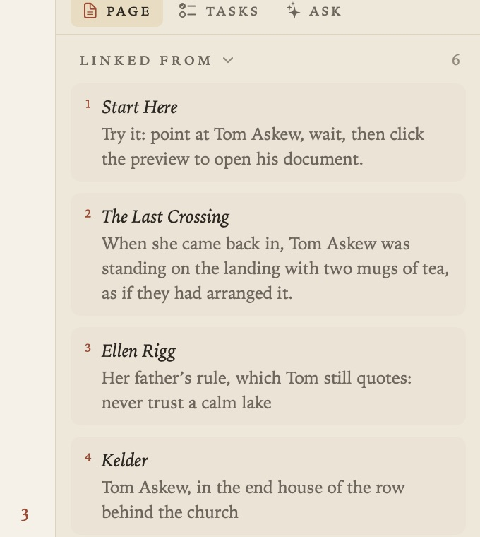
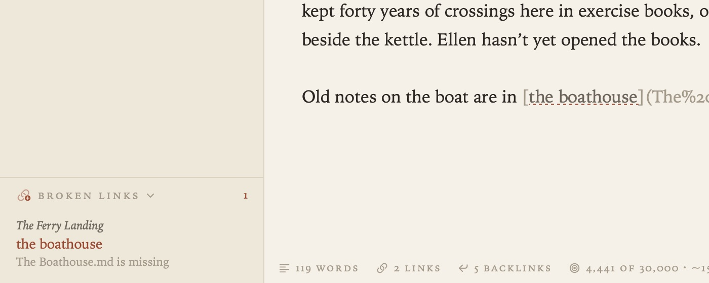
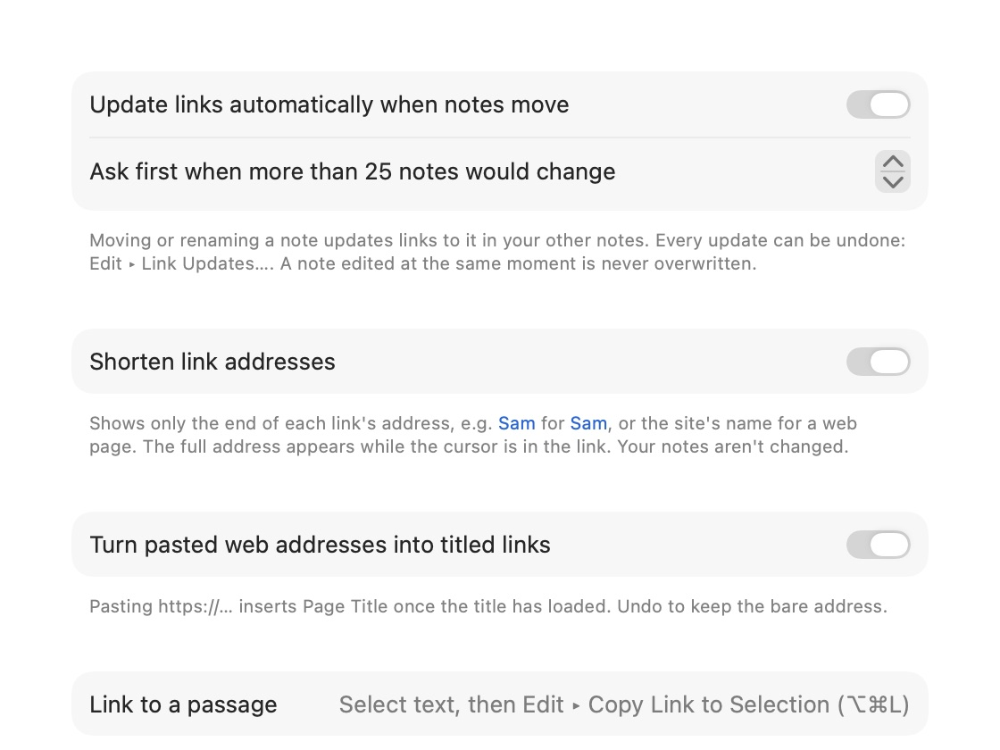
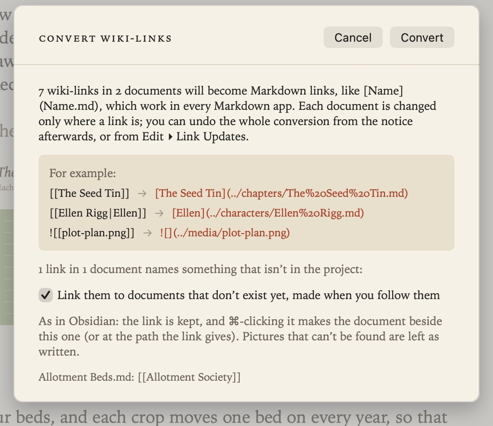

Links and Backlinks
Documents in Grasmere link to each other with ordinary Markdown links, written relative to the document they’re in, the way GitHub and website builders read them: [Margaret](people/Margaret.md). Grasmere keeps every link correct as your documents move, and shows each document the documents that link to it.

Making a link
- Type
[text](and a picker opens at the cursor. Documents that match the text come first, with a preview of the highlighted one beside the list. Press Return to insert the link. Choose “New document” to make a document that isn’t there yet. - Select some words and press ⌘K (Edit ▸ Insert Link), then choose a document.
- Link to a heading: after a document’s name in the picker, type
#and choose one of its headings. The link ends in the heading’s id, as inThe%20Allotment.md#the-shed. - Link to a picture: the picker lists pictures in the project as well as documents.
- Paste a web address and it becomes a link titled with the page’s name once the title has loaded. Undo (⌘Z) keeps the bare address.
Names with spaces are written with %20, as the web expects, so links work in other apps and on a website too.
Links to passages
A link can point at a passage rather than a whole document, using the same text fragments that web browsers follow (document.md#:~:text=…). Select some text, choose Edit ▸ Copy Link to Selection (⌥⌘L), and paste the link into any document.

In the quoted document, a small number in the margin marks each passage another document links to. Point at the number to see the passage highlighted. If the passage is reworded a little, Grasmere repairs the link to match.
Following links
- Rest the pointer on a link for a moment to see a preview: a document’s opening, a heading’s section, a quoted passage, a web page’s title and description, or a picture. Move onto the preview and click it to open what it shows.
- ⌘-click a link to follow it straight away.
- ⌥-click a link to open it in a pane beside the page. See Focus Mode and Split View.
- A link to a document that doesn’t exist yet makes the document when you follow it, titled from its name, in the folder the link points to (new in 1.1). So you can write links first and fill the documents in later.
- Go ▸ Back (⌘[) and Forward (⌘]) step through the documents you’ve opened. A mouse’s side buttons and a two-finger swipe do the same.
Links stay correct
Rename or move a document or a folder, in Grasmere, in Finder or in a terminal, and every link to it is rewritten in every document that links to it. Heading links and passage links are kept pointing at the right text too.
- A message beneath the page says how many documents were updated, with Undo.
- Edit ▸ Link Updates lists recent updates, each of which can be undone.
- A document you’re editing at that moment is never overwritten: its links are updated in the open document instead.
- Grasmere notices changes made in other apps by itself. Project ▸ Update Links Now looks straight away, if you’ve just moved things in Finder and don’t want to wait.
Settings ▸ Links ▸ Update links automatically when documents move is on by default. Turn it off and Grasmere asks before updating links. Ask first when more than 25 documents would change sets the size of change that always asks first.
Broken links
A link to a document that isn’t there is shown muted, over a dotted underline, and its preview says so. When a project has broken links, the contents list them in a section of their own; click one to go to it.

Backlinks
The margin on the right shows, for the open document, every document that links to it (Linked from), the documents it links to (Links to), and documents that name it without linking (Mentioned in). See The Margin.

Settings
In Settings ▸ Links:

- Shorten link addresses shows only the end of each address, such as
[Sam](Sam.md)for[Sam](../../people/Sam.md). The full address appears while the cursor is in the link. Your documents aren’t changed. - Turn pasted web addresses into titled links can be turned off.
Wiki-links
New in 1.1. Documents from Obsidian link with [[wiki-links]], which Grasmere doesn’t follow. Project ▸ Convert Wiki-Links rewrites every one in the project as a Markdown link, keeping aliases, headings and embedded pictures, and lists any that name a document that isn’t there: link those to new documents, made when you follow them, or leave them as written. The whole conversion can be undone. See Support if you’re bringing documents from Obsidian.

Tips
- Grasmere doesn’t use
[[wiki-links]]. Standard links are what make your documents work everywhere else; Convert Wiki-Links, above, turns them into standard links. - A link to a folder’s
index.mdis a good way to point at a whole folder.